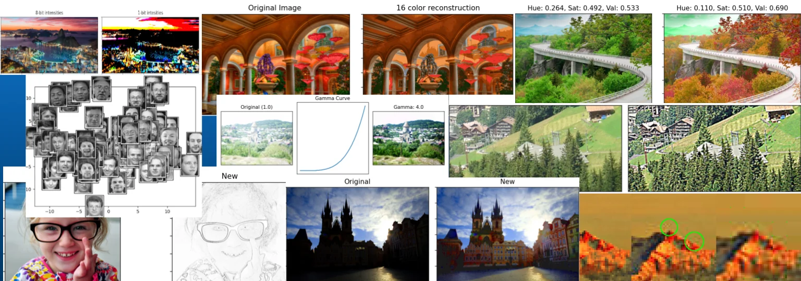

Digital Image Processing in Python
Imaging is everywhere. This interactive textbook covers the acquisition, processing, and analysis of digital images, from the human visual system, to image and video compression, to pattern recognition and machine learning. Every section is a Jupyter notebook you can run, change, and break, with hands-on exercises built in.
- Sampling & quantization
- Color spaces
- Contrast enhancement
- Entropy & Huffman coding
- Spatial filtering & edges
- Wavelets & JPEG
- Segmentation & superpixels
- Neural networks
- PCA & face space
- Tomography & Fourier analysis
Free and open under CC BY-SA 4.0. Teaching a related course? You're welcome to adapt it! Please provide credit where it's due, and please let me know!